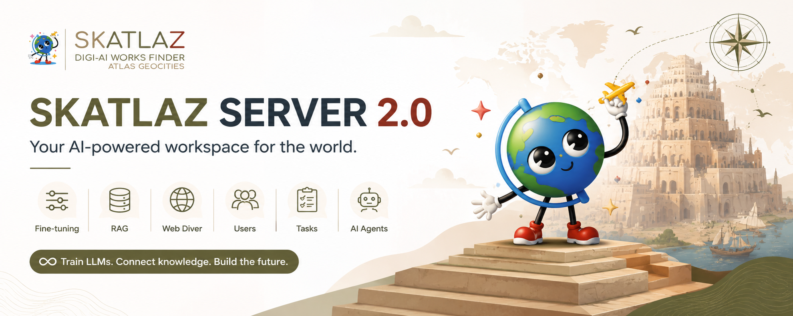

Client 2.0
Interface rápida para consultar o servidor via prompt Ask e receber respostas estruturadas.
Documentação completa para operar o Skatlaz Server 2.0 com Client Ask, agentes MCP, RAG, WebDiver, fine-tuning, Ollama, Gemini e pipelines de automação.

Interface rápida para consultar o servidor via prompt Ask e receber respostas estruturadas.
Indexação de PDF, DOCX, TXT, HTML, CSV, JSON, RSS e páginas capturadas pelo WebDiver.
Agentes por categoria para código, debug, documentos, busca, crawler, treinamento e automação.
O Skatlaz Server 2.0 é um servidor Django para IA generativa. Ele centraliza provedores LLM, agentes, coleções RAG, fontes documentais, chunks, tarefas WebDiver, datasets e preparação de fine-tuning.
Cliente Ask → Django API → MCP Runtime → Agent Router → RAG/WebDiver/Code → Ollama ou Gemini → Resposta JSON